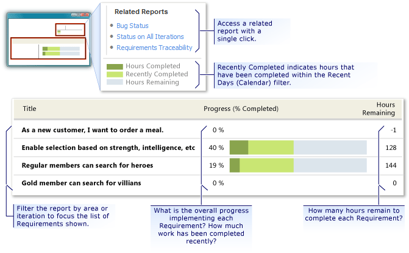
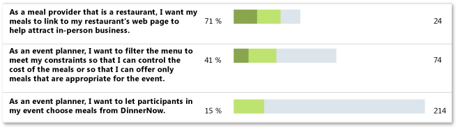
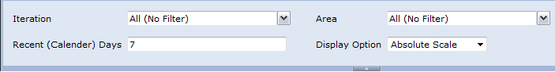

The Requirements Progress report lists all requirements, filtered by product area and iteration in order of importance.
For information about how to access, refresh, or manage reports, see Reports (CMMI).
|
|
|---|
|
This report requires that the team project collection that contains your team project
was provisioned with SQL Server Reporting Services. This report is not available
if
|
|
In this topic |
You can use this report to answer the following questions :
|
Required Permissions
To view the report, you must be assigned or belong to a group that has been assigned the Browser role in Reporting Services. For more information, see Add Users to Team Projects or Managing Permissions.
 Data
in the Report
Data
in the Report
The Requirements Progress report shows the status of completion as determined by the tasks that have been defined to implement the requirement, as the following illustration shows. The data in the report is derived from the data warehouse.
This report displays the following information for each requirement that appears in the report:
-
Progress % Completed: Numeric value that represents the percentage of completed work based on the rollup of baseline and completed hours for all tasks that are linked to the requirement or its child requirements.
-
Hours Completed: A visual representation of the completed hours, displayed as a dark green bar.
-
Recently Completed: A visual representation of those hours completed within the time interval specified for Recent (Calendar Days) , displayed as a light green bar.
-
Hours Remaining: Rollup of all remaining hours for all tasks that are linked to the requirement or its child requirements.
 Note
Note
The report displays active requirements in bold type and closed requirements in normal type.
Requirements that Appear in the Report
The Requirements Progress report lists and highlights requirements according to the following criteria:
-
Requirements appear in order of their importance, based on their assigned ranking.
-
Requirements appear in bold type when they are in the active or resolved state.
-
Requirements appear in normal type when they are in the closed state.
-
Requirements appear in gray type when their assigned iteration or area is outside the filtered set but they have tasks or child requirements that are within the filtered set of iterations or product areas.
Required Activities for Tracking Work Items
For the Requirements Progress report to be useful and accurate, the team must perform the following activities:
-
Define requirements, use cases and tasks, create a Child link from each use case to the requirement that it describes, from the task to the use case it implements, and create a Child link from any sub-task to its parent task.
For more information, see Use Case (GovDev) and Task (GovDev). .
-
Define and update the Completed and Remaining fields for each task or subtask during the iteration or release
 Important
Important
If you subdivide a task into sub-tasks, specify hours only for the sub-tasks. These hours are rolled up as summary values for the parent task and requirement.
-
Specify the Iteration and Area paths for each requirement and task.
Note
For information about how to define iteration and area paths, see Create and Modify Areas and Iterations.
Interpreting
the Report
Depending on your area of focus, you can filter the report in the following ways:
-
Specify the Iteration and Area paths of interest.
-
Change the Recent (Calendar) Days.
By default, the value of this field is seven days.
-
Click or to expand or collapse a requirement and display child requirements. Parent requirements display a rollup of all task hours that are assigned to it and its child requirements.
For more information, see Filtering the Report and Changing the Displaylater in this topic.
Questions That the Report Answers
You can review the report to determine how much work the team performed for the past week or recent period. Specifically, you can find answers to the following questions:
-
On which requirements did the team make progress, and which are almost complete?
Requirements on which the team made progress will show a significant light green band within the progress bar.
Requirements that are almost complete will indicate a high Progress % Completed, the progress bar will be almost completely green, and few hours will be listed in the Hours Remaining column.
-
Which requirements did the team not work on?
Requirements that were not worked on will not show any light green band within the progress bar.
-
Which requirements have the most work still to be completed?
Requirements that require the most work to complete will show a significant blue band within the progress bar and a large number of hours in the Hours Remaining column.
-
Is work on any requirement blocked?
Requirements that show no light green band in the progress bar might indicate a blocking issue.
If the team has not completed any work on a requirement for several weeks, you might want to determine why and identify any blocking or resource issues.
-
Can we deliver everything that we planned? Which goals should we re-scope or cut?
Based on the requirements that are still active, you might want to defer some requirements to a later iteration so that the team can focus on completing other requirements in the current iteration.
Healthy Version of Report
A healthy Requirements Progress report shows that the team recently completed work (light green) on all requirements that are expected to be in progress, as the following illustration shows.
Unhealthy Version of Report
An unhealthy Requirements Progress report might show one or more of the following indications:
-
One or more requirements show no work.
Requirements that have 0% progress or 0 hours remaining have no tasks or estimated effort defined for them. You might want to verify whether tasks to implement the requirement are both assigned correctly and linked to the requirement.
-
Many requirements have no recently completed work.
When several requirements indicate no or very small amounts of recently completed work, team progress is slow. You might investigate the cause of the slow progress and determine whether you should resolve or track blocking issues.
Filtering
the Report and Changing the Display
You can filter the Requirements Progress report or change its display in the following ways:
-
Filter the list of requirements that appear by changing the iteration or area paths.
-
Change the time interval that determines what is considered recent.
The amount of Recently Completed work is the work that the team performed or added during the interval specified by Recent (Calendar) Days. To determine whether the team performed any work in the last week, you set the value to 7 days. To determine how much work the team completed in the last month, you set the value to 30 days.
-
Change the scale that is used to show progress.
You can view the report in absolute scale or in 100% scale. Absolute scale shows progress relative to work that the team performed on all requirements in the report, and 100% scale shows progress specific to the baseline of work for each requirement.
The following illustration shows the available filters and display options.
To filter the requirements that appear in the report
-
In the Iteration or Area list, select the check box of each iteration or product area to include.
Note
For information about how to define iteration and area paths, see Create and Modify Areas and Iterations.
-
Click View Report to refresh the display based on the new filter criteria.
To change the time interval that determines recent activity
-
In the Recent (Calendar) Days box, type the number of days to be considered as the recent time interval.
-
Click View Report to refresh the display based on the new interval.
To change the scale that displays requirement progress
-
In the Display Option list, click one of the following options:
-
Absolute Scale: Displays the progress of hours completed and remaining as a percentage of the baseline, which appears relative to all requirements in the report.
-
100% Scale: Displays the progress of hours completed and remaining as a percentage of the baseline for each requirement, which is always 100%.
-
-
Click View Report to refresh the display based on the new scale.